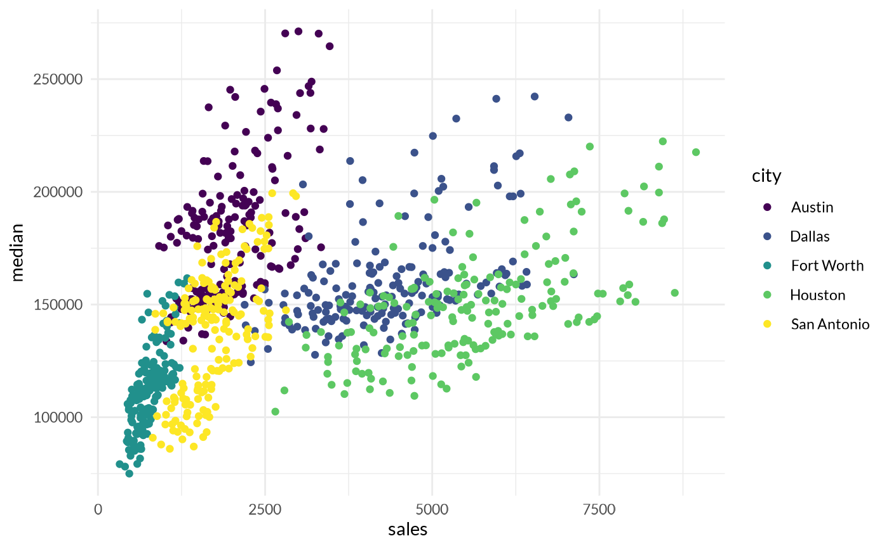
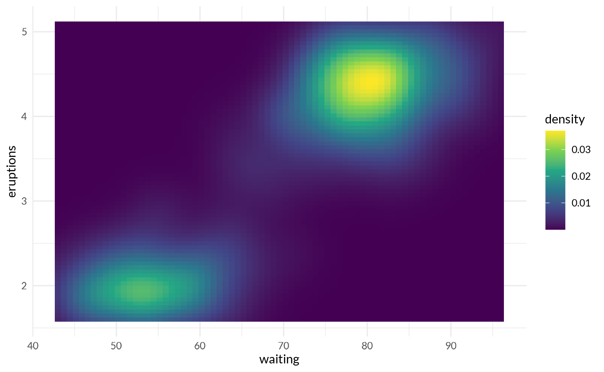

jbplot includes functions to change the style of ggplot2 plots. The included
theme, quo, can be added to individual plots using
theme_quo().
Quo Theme
The quo theme applied to the venerable mtcars dataset.
Example adapted from ggplot2::theme_minimal():
p1 <- ggplot(mtcars, aes(x = wt, y = mpg, color = factor(cyl))) +
geom_point() +
labs(
title = "Fuel economy declines as weight increases",
subtitle = "(1973-74)",
caption = "Data from the 1974 Motor Trend US magazine.",
tag = "Figure 1",
x = "Weight (1000 lbs)",
y = "Fuel economy (mpg)",
color = "Gears"
)
p1
p1 + theme_quo()
The viridis color scheme can be added manually using
ggplot2::scale_color_viridis_d():
p1 +
theme_quo() +
scale_color_viridis_d()
Viridis Quo
Quo is designed to be paired with the viridis color scale, added by calling one of the continuous (c) or discrete (d) viridis color scales:
ggplot2::scale_color_viridis_c()ggplot2::scale_fill_viridis_c()ggplot2::scale_color_viridis_d()ggplot2::scale_fill_viridis_d()
Sample plots using the default theme and color scales:
txsamp <- subset(txhousing, city %in% c("Houston", "Fort Worth", "San Antonio", "Dallas", "Austin"))
(d <- ggplot(data = txsamp, aes(x = sales, y = median)) +
geom_point(aes(colour = city)))
(p <- ggplot(txsamp, aes(x = median, fill = city)) +
geom_histogram(position = "dodge", binwidth = 15000))The same plots after applying viridis and quo:
d + scale_color_viridis_d() + theme_quo()
p + scale_fill_viridis_d() + theme_quo()
v + scale_fill_viridis_c() + theme_quo()
Grid lines
Grid lines can be selectively disabled using
theme_quo():
d + scale_color_viridis_d() + theme_quo(minor = FALSE)
p + scale_fill_viridis_d() + theme_quo(x = FALSE)
v + scale_fill_viridis_c() + theme_quo(major = FALSE, minor = FALSE)